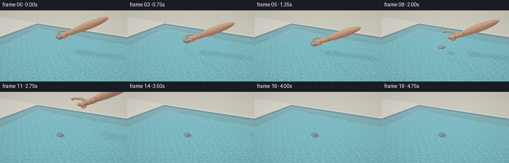
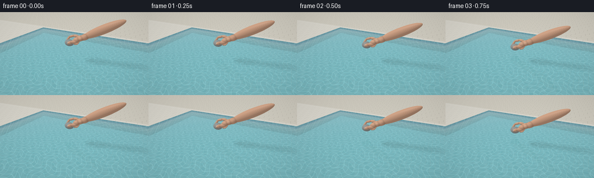

CODING AGENTS AS PIXEL WORLD MODELS
traex/GPT-6.1-Sol · phygen_007
点击播放 · 原生 RGB 像素
逐轮保存的候选
回放视频、检查图与代码变化。
每份候选均可单独播放。实际图片检查记录在下方工具轨迹中。
候选 01播放与检查图
点击播放 · 原生 RGB 像素


展开代码变化
--- 上一保存版本
+++ 本次保存版本
@@ -0,0 +1,309 @@
+"""A deterministic, purely numpy ray renderer of a gently lowered pebble in a pool."""
+from pathlib import Path
+import math
+import numpy as np
+from PIL import Image
+import artifact_io
+
+W,H=256,144
+S=3
+RW,RH=W*S,H*S
+rng=np.random.default_rng(31)
+
+def norm(v):
+ return v/np.maximum(np.linalg.norm(v,axis=-1,keepdims=True),1e-9)
+
+def ellipsoid(center, radii, color, kind='skin', axis=None):
+ if axis is None: B=np.eye(3)
+ else:
+ a=norm(np.array(axis,dtype=float)); b=norm(np.cross(a,[0,0,1.])); c=np.cross(a,b)
+ B=np.stack([a,b,c],axis=1)
+ return (np.array(center,float),np.array(radii,float),np.array(color,float),kind,B)
+
+def segment(a,b,r,color,kind='skin',width=None):
+ a,b=np.array(a,float),np.array(b,float)
+ return ellipsoid((a+b)/2,[np.linalg.norm(b-a)/2+r,r if width is None else width,r],color,kind,b-a)
+
+SKIN=[.65,.365,.235]
+def geometry(t):
+ # The pebble starts in a pinch, touches the water, then is let go, not thrown.
+ release=1.5
+ if t<=release:
+ u=min(1,t/release); u=u*u*(3-2*u)
+ sy=.72-.58*u
+ else:
+ dt=t-release
+ sy=max(-1.29,.14-.22*dt-1.25*dt*dt)
+ sc=np.array([-.55,sy,.4])
+ rock=ellipsoid(sc,[.29,.205,.235],[.30,.315,.305],'stone')
+ # A right hand: oblique palm, two softly bent pinching fingers and curled fingers.
+ lift=max(0,t-release)
+ withdraw=np.array([.92*lift, .76*lift+.35*lift*lift, -.10*lift])
+ hc=np.array([-.55, .72-.58*(min(1,t/release)**2*(3-2*min(1,t/release))), .4])+withdraw
+ op=min(1,lift/.48)
+ parts=[]
+ def E(p,r,col=SKIN,axis=None,kind='skin'):
+ parts.append(ellipsoid(hc+np.array(p),r,col,kind,axis))
+ def C(a,b,r,col=SKIN,width=None):
+ parts.append(segment(hc+np.array(a),hc+np.array(b),r,col,width=width))
+ # Forearm and palm slope up and to the right out of shot.
+ C([.98,.52,-.06],[2.7,1.47,-.1],.215,width=.24)
+ E([.95,.49,-.06],[.32,.18,.205],axis=[1,.52,0])
+ E([.65,.35,-.07],[.37,.165,.265],axis=[1,.4,0])
+ E([.52,.30,.10],[.22,.15,.155],axis=[1,.3,0])
+ # Index finger curves around the far side of the pebble.
+ i0=[.45,.40,-.22]; i1=[.19,.40+op*.08,-.24]; i2=[-.10-op*.12,.30+op*.17,-.20]; i3=[-.20-op*.13,.095+op*.34,-.10]
+ C(i0,i1,.084); C(i1,i2,.074); C(i2,i3,.069)
+ E(i3,[.075,.081,.071])
+ # Thumb on the near face. The nail is a thin inset ivory-pink oval.
+ th0=[.56,.22,.16]; th1=[.32,.19+op*.05,.26]; th2=[.08+op*.16,.065+op*.20,.205+op*.10]
+ C(th0,th1,.105); C(th1,th2,.092)
+ E(th2,[.101,.083,.096])
+ E(np.array(th2)+[.005,.029,.079],[.068,.054,.012],[.80,.55,.43],axis=[1,.18,0],kind='nail')
+ # Three fingers naturally curled into the palm, behind the pinch.
+ for j in range(3):
+ z=-.075+j*.125
+ a=[.56+j*.018,.34,z]; b=[.35+j*.028,.22,z]; c=[.40+j*.025,.07,z+.012]; d=[.57+j*.018,.11,z+.019]
+ C(a,b,.077-j*.006); C(b,c,.075-j*.006); C(c,d,.068-j*.006)
+ return [rock]+parts
+
+# Sun from the upper left, and a pale environment reflected by the water.
+SUN=norm(np.array([-3.5,7.,3.0]))
+def env(d):
+ k=np.clip(d[...,1],0,1)
+ col=np.empty(d.shape)
+ col[...,0]=.70-.30*k
+ col[...,1]=.81-.23*k
+ col[...,2]=.86-.06*k
+ # Reflections of distant foliage, not a uniformly painted water plane.
+ az=np.arctan2(d[...,0],-d[...,2])
+ edge=.055+.055*(np.sin(az*7)+.42*np.sin(az*19+1))
+ foliage=(d[...,1]<edge)&(d[...,1]>-.15)
+ f=.035*np.sin(az*55)+.025*np.cos(d[...,1]*137+az*13)
+ green=np.stack([.13+f,.225+f,.12+f],-1)
+ col=np.where(foliage[...,None],green,col)
+ sd=np.maximum(0,np.sum(d*SUN,axis=-1))
+ col+=((sd**700)*1.7)[...,None]*np.array([1.,.92,.72])
+ return col
+
+def intersections(o,d,objects,maxdist=None):
+ # Analytic ellipsoid intersections; rays can originate at the water surface.
+ shape=d.shape[:-1]
+ near=np.full(shape,1.e6)
+ ids=np.full(shape,-1,np.int16)
+ for i,(c,r,col,kind,B) in enumerate(objects):
+ q=((o-c)@B)/r
+ v=(d@B)/r
+ a=np.sum(v*v,-1); b=np.sum(q*v,-1); cc=np.sum(q*q,-1)-1
+ det=b*b-a*cc
+ rt=(-b-np.sqrt(np.maximum(det,0)))/a
+ good=(det>=0)&(rt>.0001)&(rt<near)
+ near=np.where(good,rt,near); ids=np.where(good,i,ids)
+ return near,ids
+
+def object_colors(o,d,dist,ids,objects,under=False):
+ p=o+d*dist[...,None]
+ cols=np.zeros_like(d)
+ for i,(c,r,col,kind,B) in enumerate(objects):
+ mask=ids==i
+ if not np.any(mask): continue
+ pp=p[mask]; view=d[mask]
+ loc=(pp-c)@B/r
+ n=norm(((loc/r)@B.T))
+ if kind=='stone':
+ # Granite/river pebble: irregular diffuse grains, subdued veins, no plastic gloss.
+ f=(np.sin(pp[:,0]*83+np.sin(pp[:,2]*64))*np.sin(pp[:,1]*93+pp[:,2]*37))
+ f2=np.sin(loc[:,0]*23+loc[:,1]*14+np.sin(loc[:,2]*16))
+ f3=np.sin(loc[:,0]*111+loc[:,1]*71)*np.sin(loc[:,2]*137+loc[:,1]*84)
+ vein=np.exp(-((np.sin(loc[:,0]*5.1+loc[:,2]*3+loc[:,1]*1.7)-.3)/.075)**2)
+ al=col[None,:]*(1+.15*f[:,None]+.045*f2[:,None]+.09*f3[:,None])+.026*vein[:,None]
+ perturb=np.stack([np.sin(loc[:,1]*34+loc[:,2]*19),np.sin(loc[:,0]*32+loc[:,2]*27),np.sin(loc[:,0]*29+loc[:,1]*38)],-1)
+ n=norm(n+.045*perturb)
+ specpower=38; specstrength=.055
+ else:
+ # Skin varies smoothly; narrow lines at bent finger joints are natural creases.
+ v=.015*np.sin(pp[:,0]*63+pp[:,1]*49)*np.sin(pp[:,2]*78)
+ al=col[None,:]+v[:,None]
+ lightwarm=np.maximum(0,n[:,1])[:,None]*np.array([.05,.020,.009])
+ al+=lightwarm
+ specpower=42; specstrength=.055 if kind=='skin' else .14
+ if kind=='skin':
+ # Gentle local occlusion at overlaps makes joints and curled fingers legible.
+ occl=np.ones(len(pp))
+ for j,(c2,r2,co2,ki2,B2) in enumerate(objects):
+ if j==i or ki2=='stone' or ki2=='nail': continue
+ if np.linalg.norm(c2-c)>max(r)+max(r2)+.08: continue
+ dd=np.linalg.norm(((pp-c2)@B2)/r2,axis=-1)-1
+ occl=np.minimum(occl,.78+.22*np.clip(dd/.24,0,1))
+ al*=occl[:,None]
+ diffuse=np.maximum(0,np.sum(n*SUN,-1))
+ lighting=.51+.60*diffuse
+ # Broad soft illumination and a delicate warm rim.
+ half=norm(SUN-view)
+ spec=np.maximum(0,np.sum(n*half,-1))**specpower*specstrength
+ out=al*lighting[:,None]+spec[:,None]*np.array([1,.92,.82])
+ cols[mask]=out
+ return cols
+
+def caustics(x,z,t):
+ # Intersecting slowly drifting wave lenses create restrained bright pool-floor filaments.
+ a=x*10.4+1.35*np.sin(z*5.3+t*.55)+.24*np.sin(x*13-z*6)
+ b=z*11.6+1.17*np.sin(x*5.7-t*.48)+.24*np.cos(z*17+x*4)
+ ca=np.exp(-(np.sin(a)/.145)**2)+np.exp(-(np.sin(b)/.15)**2)
+ return ca*.16
+
+def solid_scene(o,d,objects,t,with_objs=True):
+ shape=d.shape[:-1]
+ dist=np.full(shape,1.e5); typ=np.zeros(shape,np.int8)
+ # Infinite sunlit deck, with a rectangular pool cut through it.
+ ty=(.12-o[...,1])/np.where(abs(d[...,1])>1e-8,d[...,1],1e-8)
+ p=o+d*ty[...,None]
+ outside=(p[...,2]<-3.3)|(p[...,0]<-5.7)|(p[...,0]>5.7)
+ good=(ty>0)&outside
+ dist=np.where(good,ty,dist); typ=np.where(good,1,typ)
+ # Tiled floor.
+ tf=(-1.50-o[...,1])/np.where(abs(d[...,1])>1e-8,d[...,1],1e-8)
+ p=o+d*tf[...,None]
+ good=(tf>0)&(tf<dist)&(p[...,2]>=-3.3)&(abs(p[...,0])<5.7)
+ dist=np.where(good,tf,dist); typ=np.where(good,2,typ)
+ # Back pool wall and sides.
+ for axis,lim,code in [(2,-3.3,3),(0,-5.7,4),(0,5.7,4)]:
+ tt=(lim-o[...,axis])/np.where(abs(d[...,axis])>1e-8,d[...,axis],1e-8)
+ p=o+d*tt[...,None]
+ good=(tt>0)&(tt<dist)&(p[...,1]<.12)&(p[...,1]>-1.5)
+ dist=np.where(good,tt,dist);typ=np.where(good,code,typ)
+ od,oi=intersections(o,d,objects) if with_objs else (np.full(shape,1e6),np.full(shape,-1))
+ hit=(oi>=0)&(od<dist)
+ dist=np.where(hit,od,dist); typ=np.where(hit,5,typ)
+ p=o+d*dist[...,None]
+ col=env(d)
+ for k in [1,2,3,4]:
+ m=typ==k
+ if not np.any(m): continue
+ q=p[m]; x,y,z=q.T
+ if k==1:
+ # Wide cream coping, then stone pavers with offset rectangular joints.
+ near=z> -3.68
+ xx=x+np.floor((z+3.68)/.55)*.32
+ gx=np.minimum(np.mod(xx,.8),.8-np.mod(xx,.8))
+ gz=np.minimum(np.mod(z+3.68,.55),.55-np.mod(z+3.68,.55))
+ grout=(gx<.011)|((gz<.009)&(~near))
+ fleck=.017*np.sin(x*135+z*74)*np.sin(z*111-x*84)+.011*np.cos(x*21-z*13)
+ cc=np.stack([.72+fleck,.688+fleck,.594+fleck],-1)
+ cc[near]=np.stack([.80+fleck[near],.775+fleck[near],.69+fleck[near]],-1)
+ cc[grout]*=.76
+ # Coping lip's small bevel catches sunlight.
+ cc+=np.exp(-((z+3.31)/.027)**2)[:,None]*.09
+ else:
+ u=x if k!=4 else z; v=z if k==2 else y
+ tile=.235
+ gu=np.minimum(np.mod(u,tile),tile-np.mod(u,tile)); gv=np.minimum(np.mod(v,tile),tile-np.mod(v,tile))
+ grout=(gu<.006)|(gv<.006)
+ variation=.024*np.sin(np.floor(u/tile)*73.12+np.floor(v/tile)*21.34)
+ cc=np.stack([.29+variation,.57+variation,.60+variation],-1)
+ cc[grout]=[.36,.57,.56]
+ cc+=caustics(x,z+y*.4,t)[:,None]*np.array([.65,1.,.94])
+ if k!=2: cc*=.77
+ # Waterline band of very small blue ceramic tiles.
+ if k==3 or k==4:
+ band=y>-.22
+ cc[band]*=np.array([.64,.79,.89])
+ # Soft shadow projected through water onto the floor from the hand and pebble.
+ if k==2:
+ ss=np.zeros(len(q))
+ for offset in [[-.07,0,.01],[.05,0,.04],[0,0,-.06]]:
+ rays=np.broadcast_to(norm(SUN+offset),q.shape)
+ sd,si=intersections(q+np.array([0,.003,0]),rays,objects)
+ ss+=(si>=0)*1/3
+ cc*=1-.25*ss[:,None]
+ col[m]=cc
+ m=typ==5
+ if np.any(m):
+ col[m]=object_colors(o if o.shape==d.shape else np.broadcast_to(o,d.shape)[m], d[m], dist[m], oi[m],objects) if o.shape!=d.shape else object_colors(o[m],d[m],dist[m],oi[m],objects)
+ return col,dist,typ
+
+def wave(x,z,t):
+ h=.0025*np.sin(2.9*x+2.2*z+t*.63)+.0018*np.sin(4.8*x-3.7*z-t*.48)
+ hx=.0025*2.9*np.cos(2.9*x+2.2*z+t*.63)+.0018*4.8*np.cos(4.8*x-3.7*z-t*.48)
+ hz=.0025*2.2*np.cos(2.9*x+2.2*z+t*.63)-.0018*3.7*np.cos(4.8*x-3.7*z-t*.48)
+ r=np.sqrt((x+.55)**2+(z-.4)**2)+1.e-6
+ for born,amp in [(1.0,.006),(1.45,.013),(1.73,.009),(2.05,.004)]:
+ age=t-born
+ if age<0: continue
+ radius=.10+age*1.05
+ width=.10+.026*age
+ delta=r-radius
+ en=np.exp(-(delta/width)**2)*np.exp(-age*.65)
+ a=amp*en*np.cos(delta*21)
+ der=amp*en*(-2*delta/width**2*np.cos(delta*21)-21*np.sin(delta*21))
+ h+=a; hx+=der*(x+.55)/r; hz+=der*(z-.4)/r
+ return h,hx,hz
+
+CAM=np.array([2.65,3.45,6.15])
+TARGET=np.array([-.3,-.04,.25])
+fwd=norm(TARGET-CAM); right=norm(np.cross(fwd,[0,1,0])); up=np.cross(right,fwd)
+fov=np.deg2rad(39)
+xx,yy=np.meshgrid((np.arange(RW)+.5)/RW*2-1,1-(np.arange(RH)+.5)/RH*2)
+RAYS=norm(fwd+xx[...,None]*right*math.tan(fov/2)*W/H+yy[...,None]*up*math.tan(fov/2))
+
+def render(t):
+ obj=geometry(t)
+ d=RAYS
+ # Initial hit, refined for the actual wave displacement.
+ tw=-CAM[1]/d[...,1]
+ for _ in range(3):
+ p=CAM+d*tw[...,None]
+ wh,wx,wz=wave(p[...,0],p[...,2],t)
+ tw=(wh-CAM[1])/d[...,1]
+ p=CAM+d*tw[...,None]
+ wh,wx,wz=wave(p[...,0],p[...,2],t)
+ n=norm(np.stack([-wx,np.ones_like(wx),-wz],-1))
+ cosi=-np.sum(d*n,-1)
+ eta=1/1.333
+ refr=norm(eta*d+(eta*cosi-np.sqrt(np.maximum(0,1-eta**2*(1-cosi*cosi))))[...,None]*n)
+ origin=p-n*.0008
+ wet,wd,wtype=solid_scene(origin,refr,obj,t)
+ # Absorption and subtle particulate scattering retain visibility of the sinking stone.
+ length=np.minimum(wd,8)
+ trans=np.exp(-length[...,None]*np.array([.29,.105,.065]))
+ wet=wet*trans+np.array([.045,.30,.335])*(1-trans)
+ refl=norm(d+2*cosi[...,None]*n)
+ reflected=env(refl)
+ # Reflect the nearby hand and pebble into the water (with wave-distorted edges).
+ rr,ri=intersections(p+n*.001,refl,obj)
+ rm=(ri>=0)
+ if np.any(rm): reflected[rm]=object_colors((p+n*.001)[rm],refl[rm],rr[rm],ri[rm],obj)
+ fres=.0204+.9796*(1-np.clip(cosi,0,1))**5
+ water=wet*(1-fres[...,None])+reflected*fres[...,None]
+ # Very small surface glints; gentle placement produces ripples rather than a splash.
+ hs=norm(SUN-d)
+ gleam=np.maximum(0,np.sum(n*hs,-1))**380
+ water+=gleam[...,None]*np.array([.9,.81,.63])*.25
+ col,ds,types=solid_scene(np.broadcast_to(CAM,d.shape),d,obj,t)
+ wm=(tw>0)&(tw<ds)&(p[...,2]>-3.3)&(abs(p[...,0])<5.7)
+ col=np.where(wm[...,None],water,col)
+ # A contact meniscus around the partly submerged pebble at the gentle release.
+ sy=obj[0][0][1]
+ if -.18<sy<.21:
+ rad=np.sqrt((p[...,0]+.55)**2/1.04+(p[...,2]-.4)**2/0.82)
+ rstone=.275*np.sqrt(max(0,1-(sy/.205)**2))
+ ring=np.exp(-((rad-rstone)/.009)**2)*wm
+ col+=ring[...,None]*np.array([.055,.075,.069])
+ # Photographic response. Work in linear light, then encode RGB.
+ col=np.maximum(col,0)
+ col=col/(1+col*.18)
+ col=np.clip(col,0,1)**(1/2.2)
+ # Subtle optical vignette, no labels or overlays.
+ vignette=1-.045*(xx*xx+yy*yy)
+ col*=vignette[...,None]
+ im=Image.fromarray(np.uint8(np.clip(col*255,0,255)))
+ return np.asarray(im.resize((W,H),Image.Resampling.LANCZOS))
+
+def main():
+ frames=[]
+ for i in range(20):
+ frames.append(render(i/4))
+ print(f'Rendered {i+1}/20',flush=True)
+ artifact_io.save(np.stack(frames),Path(__file__).parent)
+
+if __name__=='__main__': main()
可观测工具轨迹
实际执行的命令与返回图片。
命令 1exit 0
/bin/bash -lc 'ls -la && cat prompt.txt && cat GENERATION_RULES.md && cat task_spec.json'
命令 2exit 0
/bin/bash -lc 'cat artifact_io.py'
命令 3exit 0
/bin/bash -lc "python - <<'PY' import numpy, PIL print(numpy.__version__) PY"
命令 4exit 0
/bin/bash -lc 'command -v ffmpeg || true'
命令 5exit 0
/bin/bash -lc "cat > generate.py <<'PY'
\"\"\"A deterministic, purely numpy ray renderer of a gently lowered pebble in a pool.\"\"\"
from pathlib import Path
import math
import numpy as np
from PIL import Image
import artifact_io
W,H=256,144
S=3
RW,RH=W*S,H*S
rng=np.random.default_rng(31)
def norm(v):
return v/np.maximum(np.linalg.norm(v,axis=-1,keepdims=True),1e-9)
def ellipsoid(center, radii, color, kind='skin', axis=None):
if axis is None: B=np.eye(3)
else:
a=norm(np.array(axis,dtype=float)); b=norm(np.cross(a,[0,0,1.])); c=np.cross(a,b)
B=np.stack([a,b,c],axis=1)
return (np.array(center,float),np.array(radii,float),np.array(color,float),kind,B)
def segment(a,b,r,color,kind='skin',width=None):
a,b=np.array(a,float),np.array(b,float)
return ellipsoid((a+b)/2,[np.linalg.norm(b-a)/2+r,r if width is None else width,r],color,kind,b-a)
SKIN=[.65,.365,.235]
def geometry(t):
# The pebble starts in a pinch, touches the water, then is let go, not thrown.
release=1.5
if t<=release:
u=min(1,t/release); u=u*u*(3-2*u)
sy=.72-.58*u
else:
dt=t-release
sy=max(-1.29,.14-.22*dt-1.25*dt*dt)
sc=np.array([-.55,sy,.4])
rock=ellipsoid(sc,[.29,.205,.235],[.30,.315,.305],'stone')
# A right hand: oblique palm, two softly bent pinching fingers and curled fingers.
lift=max(0,t-release)
withdraw=np.array([.92*lift, .76*lift+.35*lift*lift, -.10*lift])
hc=np.array([-.55, .72-.58*(min(1,t/release)**2*(3-2*min(1,t/release))), .4])+withdraw
op=min(1,lift/.48)
parts=[]
def E(p,r,col=SKIN,axis=None,kind='skin'):
parts.append(ellipsoid(hc+np.array(p),r,col,kind,axis))
def C(a,b,r,col=SKIN,width=None):
parts.append(segment(hc+np.array(a),hc+np.array(b),r,col,width=width))
# Forearm and palm slope up and to the right out of shot.
C([.98,.52,-.06],[2.7,1.47,-.1],.215,width=.24)
E([.95,.49,-.06],[.32,.18,.205],axis=[1,.52,0])
E([.65,.35,-.07],[.37,.165,.265],axis=[1,.4,0])
E([.52,.30,.10],[.22,.15,.155],axis=[1,.3,0])
# Index finger curves around the far side of the pebble.
i0=[.45,.40,-.22]; i1=[.19,.40+op*.08,-.24]; i2=[-.10-op*.12,.30+op*.17,-.20]; i3=[-.20-op*.13,.095+op*.34,-.10]
C(i0,i1,.084); C(i1,i2,.074); C(i2,i3,.069)
E(i3,[.075,.081,.071])
# Thumb on the near face. The nail is a thin inset ivory-pink oval.
th0=[.56,.22,.16]; th1=[.32,.19+op*.05,.26]; th2=[.08+op*.16,.065+op*.20,.205+op*.10]
C(th0,th1,.105); C(th1,th2,.092)
E(th2,[.101,.083,.096])
E(np.array(th2)+[.005,.029,.079],[.068,.054,.012],[.80,.55,.43],axis=[1,.18,0],kind='nail')
# Three fingers naturally curled into the palm, behind the pinch.
for j in range(3):
z=-.075+j*.125
a=[.56+j*.018,.34,z]; b=[.35+j*.028,.22,z]; c=[.40+j*.025,.07,z+.012]; d=[.57+j*.018,.11,z+.019]
C(a,b,.077-j*.006); C(b,c,.075-j*.006); C(c,d,.068-j*.006)
return [rock]+parts
# Sun from the upper left, and a pale environment reflected by the water.
SUN=norm(np.array([-3.5,7.,3.0]))
def env(d):
k=np.clip(d[...,1],0,1)
col=np.empty(d.shape)
col[...,0]=.70-.30*k
col[...,1]=.81-.23*k
col[...,2]=.86-.06*k
# Reflections of distant foliage, not a uniformly painted water plane.
az=np.arctan2(d[...,0],-d[...,2])
edge=.055+.055*(np.sin(az*7)+.42*np.sin(az*19+1))
foliage=(d[...,1]<edge)&(d[...,1]>-.15)
f=.035*np.sin(az*55)+.025*np.cos(d[...,1]*137+az*13)
green=np.stack([.13+f,.225+f,.12+f],-1)
col=np.where(foliage[...,None],green,col)
sd=np.maximum(0,np.sum(d*SUN,axis=-1))
col+=((sd**700)*1.7)[...,None]*np.array([1.,.92,.72])
return col
def intersections(o,d,objects,maxdist=None):
# Analytic ellipsoid intersections; rays can originate at the water surface.
shape=d.shape[:-1]
near=np.full(shape,1.e6)
ids=np.full(shape,-1,np.int16)
for i,(c,r,col,kind,B) in enumerate(objects):
q=((o-c)@B)/r
v=(d@B)/r
a=np.sum(v*v,-1); b=np.sum(q*v,-1); cc=np.sum(q*q,-1)-1
det=b*b-a*cc
rt=(-b-np.sqrt(np.maximum(det,0)))/a
good=(det>=0)&(rt>.0001)&(rt<near)
near=np.where(good,rt,near); ids=np.where(good,i,ids)
return near,ids
def object_colors(o,d,dist,ids,objects,under=False):
p=o+d*dist[...,None]
cols=np.zeros_like(d)
for i,(c,r,col,kind,B) in enumerate(objects):
mask=ids==i
if not np.any(mask): continue
pp=p[mask]; view=d[mask]
loc=(pp-c)@B/r
n=norm(((loc/r)@B.T))
if kind=='stone':
# Granite/river pebble: irregular diffuse grains, subdued veins, no plastic gloss.
f=(np.sin(pp[:,0]*83+np.sin(pp[:,2]*64))*np.sin(pp[:,1]*93+pp[:,2]*37))
f2=np.sin(loc[:,0]*23+loc[:,1]*14+np.sin(loc[:,2]*16))
f3=np.sin(loc[:,0]*111+loc[:,1]*71)*np.sin(loc[:,2]*137+loc[:,1]*84)
vein=np.exp(-((np.sin(loc[:,0]*5.1+loc[:,2]*3+loc[:,1]*1.7)-.3)/.075)**2)
al=col[None,:]*(1+.15*f[:,None]+.045*f2[:,None]+.09*f3[:,None])+.026*vein[:,None]
perturb=np.stack([np.sin(loc[:,1]*34+loc[:,2]*19),np.sin(loc[:,0]*32+loc[:,2]*27),np.sin(loc[:,0]*29+loc[:,1]*38)],-1)
n=norm(n+.045*perturb)
specpower=38; specstrength=.055
else:
# Skin varies smoothly; narrow lines at bent finger joints are natural creases.
v=.015*np.sin(pp[:,0]*63+pp[:,1]*49)*np.sin(pp[:,2]*78)
al=col[None,:]+v[:,None]
lightwarm=np.maximum(0,n[:,1])[:,None]*np.array([.05,.020,.009])
al+=lightwarm
specpower=42; specstrength=.055 if kind=='skin' else .14
if kind=='skin':
# Gentle local occlusion at overlaps makes joints and curled fingers legible.
occl=np.ones(len(pp))
for j,(c2,r2,co2,ki2,B2) in enumerate(objects):
if j==i or ki2=='stone' or ki2=='nail': continue
if np.linalg.norm(c2-c)>max(r)+max(r2)+.08: continue
dd=np.linalg.norm(((pp-c2)@B2)/r2,axis=-1)-1
occl=np.minimum(occl,.78+.22*np.clip(dd/.24,0,1))
al*=occl[:,None]
diffuse=np.maximum(0,np.sum(n*SUN,-1))
lighting=.51+.60*diffuse
# Broad soft illumination and a delicate warm rim.
half=norm(SUN-view)
spec=np.maximum(0,np.sum(n*half,-1))**specpower*specstrength
out=al*lighting[:,None]+spec[:,None]*np.array([1,.92,.82])
cols[mask]=out
return cols
def caustics(x,z,t):
# Intersecting slowly drifting wave lenses create restrained bright pool-floor filaments.
a=x*10.4+1.35*np.sin(z*5.3+t*.55)+.24*np.sin(x*13-z*6)
b=z*11.6+1.17*np.sin(x*5.7-t*.48)+.24*np.cos(z*17+x*4)
ca=np.exp(-(np.sin(a)/.145)**2)+np.exp(-(np.sin(b)/.15)**2)
return ca*.16
def solid_scene(o,d,objects,t,with_objs=True):
shape=d.shape[:-1]
dist=np.full(shape,1.e5); typ=np.zeros(shape,np.int8)
# Infinite sunlit deck, with a rectangular pool cut through it.
ty=(.12-o[...,1])/np.where(abs(d[...,1])>1e-8,d[...,1],1e-8)
p=o+d*ty[...,None]
outside=(p[...,2]<-3.3)|(p[...,0]<-5.7)|(p[...,0]>5.7)
good=(ty>0)&outside
dist=np.where(good,ty,dist); typ=np.where(good,1,typ)
# Tiled floor.
tf=(-1.50-o[...,1])/np.where(abs(d[...,1])>1e-8,d[...,1],1e-8)
p=o+d*tf[...,None]
good=(tf>0)&(tf<dist)&(p[...,2]>=-3.3)&(abs(p[...,0])<5.7)
dist=np.where(good,tf,dist); typ=np.where(good,2,typ)
# Back pool wall and sides.
for axis,lim,code in [(2,-3.3,3),(0,-5.7,4),(0,5.7,4)]:
tt=(lim-o[...,axis])/np.where(abs(d[...,axis])>1e-8,d[...,axis],1e-8)
p=o+d*tt[...,None]
good=(tt>0)&(tt<dist)&(p[...,1]<.12)&(p[...,1]>-1.5)
dist=np.where(good,tt,dist);typ=np.where(good,code,typ)
od,oi=intersections(o,d,objects) if with_objs else (np.full(shape,1e6),np.full(shape,-1))
hit=(oi>=0)&(od<dist)
dist=np.where(hit,od,dist); typ=np.where(hit,5,typ)
p=o+d*dist[...,None]
col=env(d)
for k in [1,2,3,4]:
m=typ==k
if not np.any(m): continue
q=p[m]; x,y,z=q.T
if k==1:
# Wide cream coping, then stone pavers with offset rectangular joints.
near=z> -3.68
xx=x+np.floor((z+3.68)/.55)*.32
gx=np.minimum(np.mod(xx,.8),.8-np.mod(xx,.8))
gz=np.minimum(np.mod(z+3.68,.55),.55-np.mod(z+3.68,.55))
grout=(gx<.011)|((gz<.009)&(~near))
fleck=.017*np.sin(x*135+z*74)*np.sin(z*111-x*84)+.011*np.cos(x*21-z*13)
cc=np.stack([.72+fleck,.688+fleck,.594+fleck],-1)
cc[near]=np.stack([.80+fleck[near],.775+fleck[near],.69+fleck[near]],-1)
cc[grout]*=.76
# Coping lip's small bevel catches sunlight.
cc+=np.exp(-((z+3.31)/.027)**2)[:,None]*.09
else:
u=x if k"'!=4 else z; v=z if k==2 else y
tile=.235
gu=np.minimum(np.mod(u,tile),tile-np.mod(u,tile)); gv=np.minimum(np.mod(v,tile),tile-np.mod(v,tile))
grout=(gu<.006)|(gv<.006)
variation=.024*np.sin(np.floor(u/tile)*73.12+np.floor(v/tile)*21.34)
cc=np.stack([.29+variation,.57+variation,.60+variation],-1)
cc[grout]=[.36,.57,.56]
cc+=caustics(x,z+y*.4,t)[:,None]*np.array([.65,1.,.94])
if k!=2: cc*=.77
# Waterline band of very small blue ceramic tiles.
if k==3 or k==4:
band=y>-.22
cc[band]*=np.array([.64,.79,.89])
# Soft shadow projected through water onto the floor from the hand and pebble.
if k==2:
ss=np.zeros(len(q))
for offset in [[-.07,0,.01],[.05,0,.04],[0,0,-.06]]:
rays=np.broadcast_to(norm(SUN+offset),q.shape)
sd,si=intersections(q+np.array([0,.003,0]),rays,objects)
ss+=(si>=0)*1/3
cc*=1-.25*ss[:,None]
col[m]=cc
m=typ==5
if np.any(m):
col[m]=object_colors(o if o.shape==d.shape else np.broadcast_to(o,d.shape)[m], d[m], dist[m], oi[m],objects) if o.shape!=d.shape else object_colors(o[m],d[m],dist[m],oi[m],objects)
return col,dist,typ
def wave(x,z,t):
h=.0025*np.sin(2.9*x+2.2*z+t*.63)+.0018*np.sin(4.8*x-3.7*z-t*.48)
hx=.0025*2.9*np.cos(2.9*x+2.2*z+t*.63)+.0018*4.8*np.cos(4.8*x-3.7*z-t*.48)
hz=.0025*2.2*np.cos(2.9*x+2.2*z+t*.63)-.0018*3.7*np.cos(4.8*x-3.7*z-t*.48)
r=np.sqrt((x+.55)**2+(z-.4)**2)+1.e-6
for born,amp in [(1.0,.006),(1.45,.013),(1.73,.009),(2.05,.004)]:
age=t-born
if age<0: continue
radius=.10+age*1.05
width=.10+.026*age
delta=r-radius
en=np.exp(-(delta/width)**2)*np.exp(-age*.65)
a=amp*en*np.cos(delta*21)
der=amp*en*(-2*delta/width**2*np.cos(delta*21)-21*np.sin(delta*21))
h+=a; hx+=der*(x+.55)/r; hz+=der*(z-.4)/r
return h,hx,hz
CAM=np.array([2.65,3.45,6.15])
TARGET=np.array([-.3,-.04,.25])
fwd=norm(TARGET-CAM); right=norm(np.cross(fwd,[0,1,0])); up=np.cross(right,fwd)
fov=np.deg2rad(39)
xx,yy=np.meshgrid((np.arange(RW)+.5)/RW*2-1,1-(np.arange(RH)+.5)/RH*2)
RAYS=norm(fwd+xx[...,None]*right*math.tan(fov/2)*W/H+yy[...,None]*up*math.tan(fov/2))
def render(t):
obj=geometry(t)
d=RAYS
# Initial hit, refined for the actual wave displacement.
tw=-CAM[1]/d[...,1]
for _ in range(3):
p=CAM+d*tw[...,None]
wh,wx,wz=wave(p[...,0],p[...,2],t)
tw=(wh-CAM[1])/d[...,1]
p=CAM+d*tw[...,None]
wh,wx,wz=wave(p[...,0],p[...,2],t)
n=norm(np.stack([-wx,np.ones_like(wx),-wz],-1))
cosi=-np.sum(d*n,-1)
eta=1/1.333
refr=norm(eta*d+(eta*cosi-np.sqrt(np.maximum(0,1-eta**2*(1-cosi*cosi))))[...,None]*n)
origin=p-n*.0008
wet,wd,wtype=solid_scene(origin,refr,obj,t)
# Absorption and subtle particulate scattering retain visibility of the sinking stone.
length=np.minimum(wd,8)
trans=np.exp(-length[...,None]*np.array([.29,.105,.065]))
wet=wet*trans+np.array([.045,.30,.335])*(1-trans)
refl=norm(d+2*cosi[...,None]*n)
reflected=env(refl)
# Reflect the nearby hand and pebble into the water (with wave-distorted edges).
rr,ri=intersections(p+n*.001,refl,obj)
rm=(ri>=0)
if np.any(rm): reflected[rm]=object_colors((p+n*.001)[rm],refl[rm],rr[rm],ri[rm],obj)
fres=.0204+.9796*(1-np.clip(cosi,0,1))**5
water=wet*(1-fres[...,None])+reflected*fres[...,None]
# Very small surface glints; gentle placement produces ripples rather than a splash.
hs=norm(SUN-d)
gleam=np.maximum(0,np.sum(n*hs,-1))**380
water+=gleam[...,None]*np.array([.9,.81,.63])*.25
col,ds,types=solid_scene(np.broadcast_to(CAM,d.shape),d,obj,t)
wm=(tw>0)&(tw<ds)&(p[...,2]>-3.3)&(abs(p[...,0])<5.7)
col=np.where(wm[...,None],water,col)
# A contact meniscus around the partly submerged pebble at the gentle release.
sy=obj[0][0][1]
if -.18<sy<.21:
rad=np.sqrt((p[...,0]+.55)**2/1.04+(p[...,2]-.4)**2/0.82)
rstone=.275*np.sqrt(max(0,1-(sy/.205)**2))
ring=np.exp(-((rad-rstone)/.009)**2)*wm
col+=ring[...,None]*np.array([.055,.075,.069])
# Photographic response. Work in linear light, then encode RGB.
col=np.maximum(col,0)
col=col/(1+col*.18)
col=np.clip(col,0,1)**(1/2.2)
# Subtle optical vignette, no labels or overlays.
vignette=1-.045*(xx*xx+yy*yy)
col*=vignette[...,None]
im=Image.fromarray(np.uint8(np.clip(col*255,0,255)))
return np.asarray(im.resize((W,H),Image.Resampling.LANCZOS))
def main():
frames=[]
for i in range(20):
frames.append(render(i/4))
print(f'"'Rendered {i+1}/20',flush=True)
artifact_io.save(np.stack(frames),Path(__file__).parent)
if __name__=='__main__': main()
PY
python generate.py"命令 6exit 0
/bin/bash -lc "python - <<'PY'
from pathlib import Path
import numpy as np
from PIL import Image
p=Path('.')
a=np.load('pixels.npz')['pixels']
assert a.shape == (144,256,20)
fs=sorted(p.glob('frames/*.png'))
assert len(fs)==20
assert all(Image.open(f).size==(256,144) and Image.open(f).mode=='RGB' for f in fs)
assert Path('index.html').is_file() and Path('generate.py').is_file()
print('Validated 20 RGB frames at 256x144, 4 fps, 5 seconds.')
print('Artifacts:', ', '.join(x.name for x in p.iterdir() if x.name in ['pixels.npz','frames','index.html','inspection.png','transition_check.png','generate.py']))
PY"保存候选 1 份；完成命令 6 次；可验证图片返回 0 张。原始 API 响应与完整日志保留在本地。